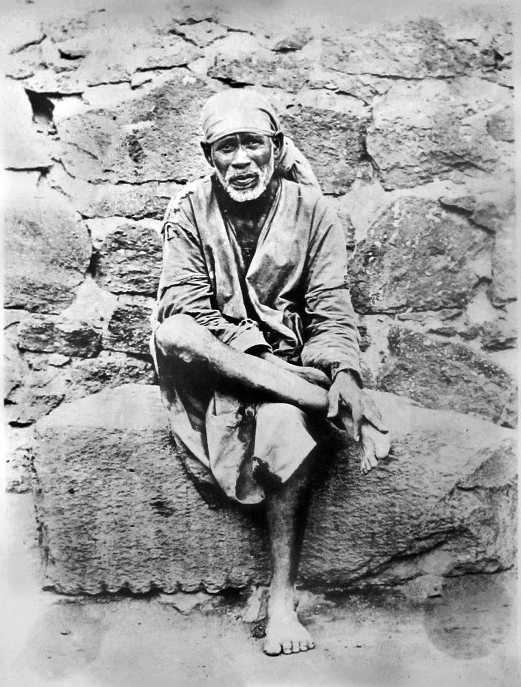

Table of Contents
Shri Satchitaanand Sadguru Sainath Maharaaj ki Jai!
We do Aarti to Sai Baba, the soul that and the giver of happiness to all. Give refuge to the downtrodden devotees who are at your feet. We do Aarti to you Sai Baba.
Burn the desires. To the seekers of Self, teach them the way to get Moksha (state of pure bliss). With their own eyes, they see the Lord Vishnu (Sriranga). We do Aarti to you Sai Baba.
You grant suitable experiences to everybody in accordance with their faith and devotion. O, the merciful one, such is your way. O kind one. We do Aarti to you Sai Baba.
Meditation of your name removes the worldly sufferings. Your actions are unfathomable. Show the path to unfortunate ones. We do Aarti to you Sai Baba.
In this age of Kaliyug (The dark and troublesome age of present ), you are the true incarnation of Brahama, that has taken form and descended on this earth. You are also Swami Datta Digambar (Three-headed deity who is considered as a combined incarnation of Brahma-Vishnu-Maheh). Datta Digambar. We do Aarti to you Sai Baba.
On Thursdays, every week, the devotees take a trip (to Shirdi), to have a glimpse of the Lord’s feet and to avert their worldly fears. We do Aarti to you Sai Baba.
The only wealth I desire is to serve at thy feet. O Lord of Lords. We do Aarti to you Sai Baba.
Just as the chatak bird desires to drink pure raw water, so O Lord! And kindly give me your assurance (that I will receive such direct knowledge). We do Aarti to you Sai Baba.
Shirdi is my Pandharpur. Sai Baba is the husband of Rama i.e. Lord Vishnu. Baba is the presiding deity there. Sai...
Pure devotion is like the river Chandrabhaga (River at Pandharpur). Our devotional feelings for Pundalik (Lord Vishnu called Vithal) has awakened.
Come along, all the people. Pray Baba and pray Sai.
Ganu (Das ganu, the composer of this aarti) requests: Sai Baba to run and give us blessings, My Mother give your blessings.
Prostrating myself with a touch of your feet and see thy beautiful form. Embracing you with love, I worship you and do your aarti with devotion.
You are my mother, my father, my brother, you are my friend. You are knowledge, You are the embodiment of love and tenderness. You are my everything, O! Lord.
My body, my speech, my mind and all my senses, my intellect, my innate being – all these I offer to you, Narayana.
I pray Achyut, Keshav, Ramnarayan, Krishnadamodar, Vasudev, Hari, Shridhar, Madhav, Gopika-Vallabh, Janaki-Nayakam, Ramachandra. (various names of Vishnu and His incarnations).
Hare Rama, Hare Rama. Rama Rama Hare Hare Hare Krishna, Hare Krishna. Krishna Krishna Hare Hare. Hare Rama, Hare Rama. Rama Rama Hare Hare
Shri Gurudeva Datta!
Even the thousand tongued Shesha(a Hindu mythological snake on whom Lord Vishnu rests) finds it inadequate to sing thy prayers of greatness. Salutations with prostrations, O! Sainath.
Those who remember your feet every day with pure devotion and thought, cross over this illusionary world. O! father, Salutations with prostrations, O! Sainath.
Appearing an ordinary person to the ignorant, he carries on His divine action(Leelas). He is the giver of inner spiritual knowledge and unity with God – Salutations with prostrations, O! Sainath.
It is great luck to be born as a human being. Human beings alone can do Sadhna(practices for obtaining purity and liberation). Hold on to the Love of Sai and kill the ego. Salutations with prostrations, O! Sainath.
Hold the hands of ignorant children like us. Bless us with a Kiss on our cheeks, give us love. Salutations with prostrations, O! Sainath.
Gods and others worship your feet. Say Suka and others treat you as equal. The Prayag (confluence of rivers) and holy places bow at your feet – Salutations with prostrations, O! Sainath.
The Gopis are always delighted to see your feet. They always dance with Krishna-natha having immersed their thoughts in Him. Salutations with prostrations, Shri Sainath.
I request you to grant me just one boon. I humbly fold my hands, and with deep faith, Mohaniraj (says, the composer of this part of Aarti) asks you: save me from this world of bewitching desires and ferry me across the ocean of existence. Salutations with prostrations, Shri Sainath.
Such art thou, Sai Baba! Sai Digambara! The incarnation of the imperishable spirit, you are all-pervading. You are the knower of the essence of the shrutis (Vedas), belonging to the lineage of the sage Atri and His wife Anusuya.
Every day, bathing in the Holy waters of the Kashi and worshipping there; then going to Kolhapur for Alms; drinking the pure waters of the Tungabhadra and then sleeping at Mahur province (sleeping place of Lord Datta). Please come like this O! Baba.
A ‘Jholi’ (bag for alms hanging from the shoulder) hanging on the left shoulder, and carrying the trident ‘damru’ (kind of tabor) you bless the devotees with permanent happiness, granting them four-fold liberation viz. The resemblance to God, nearness to God, residing with the deity and absorption into the essence of Brahman. Please come like this O! Baba.
Wearing wooden sandals, carrying Jap Mala (prayer beads) Kamandalu (Container of water), wearing deerskin; on your head is the crown of serpent-like coiled tresses of your hair, which looks beautiful. Please come like this O! Baba.
All those who meditate on you diligently have Lakshmi, the Goddess of wealth, dwelling in their homes, day and night uninterruptedly (Lakshmi, otherwise is fleet-floated and does not stay in one place for a long time). You also protect them by removing all their difficulties. Please come like this O! Baba.
When I behold you in my eyes and your handsome figure, Gururaya, I experience complete bliss and please make me sing the Lord’s praises. Please come like this O! Baba.
Let us bow down to the God Sadguru Sainath, who is Truth Incarnate and is always in Consciousness and Bliss; the God who is the cause of creation, existence and destruction of the world; and, who has come into this world in a human form for the sake of his own devotees.
Let us bow down to the God Sadguru Sainath, who is the bright sun whose light destroys the darkness of worldly desires; who is beyond the realm of speech and mind, but accessible to the sages who are engrossed in Thy meditation – One who pervades the whole world, pure and devoid of all attributes.
Let us bow down to the God Sadguru Sainath, who has manifested in this kaliyug (The dark and the troublesome age of present) for the salvation of those who believe in devotion to Him and those who have taken refuge at his feet as they are drowning and tormented by the ocean of worldliness.
Let us bow down to the God Sadguru Sainath who, By His constant abode under the margosa tree, whose juice though by nature is bitter and distasteful, has turned it nectar-like sweet because He has exalted the tree above the legendary Kalpavriksh (the wish-fulfilling tree).
Let us bow down to the God Sadguru Sainath, whom people go to worship and render devotional services, knowing Him to be Himself the kalpavriksh always; for those people he satisfies their worldly desires and grants them salvation
Let us bow down to the God Sadguru Sainath, whose innumerable and wonderful Leelas(divine play), unheard of and unimagined, have displayed His divine splendorous glory; yet who is devoid of ego and is happily absorbed in the Self.
Let us bow down to the God Sadguru Sainath, who is the perennial abode of rest, repose and refuge for the virtuous people and to whom praises are directed by good and pious persons- He who is the bestower of happiness and welfare to His devotees.
Let us bow down to the God Sadguru Sainath, who is the Self-manifested, the Absolute Brahman, verily the Supreme Creator Incarnate, the Being without beginning or end, who has descended on this earth in the Ram avatar (Incarnation). O Lord, I have been sanctified by your darshan.
O Lord Sai, treasure-house of mercy, the bestower of all wealth, success and inspiration, even the creator is unable to describe the incomparable power of the dust of your feet. With my folded hands and true devotion, I surrender to you O Lord. There is no refuge for me, except the lotus feet of Shrimat Sainath, the Lord.
Lord Sai is the avatar of Raghav (Incarnation of Ram), the Lord who fulfills the desires of His devotees for the purification of their infatuated and deluded hearts and minds – to whom I pray, day and night, untiringly and blissfully.
Lord Sainath, the canopy of your mercy is like the intense luster of the autumn moon. Grant the cool shade (from that canopy) from the blazing heat of the three-fold calamities of life to those who have taken shelter at your feet.
Lord Sainath, you are my God, whom I worship. I extol your praises. Let my mind dwell lovingly at your lotus feet, just as the bee hovers over the lotus flowers enticed by the desire of honey.
Lord Sai, Guru Ocean of compassion, bless me and pardon me for all my innumerable faults. May my boundless sins which have accumulated over several cycles of life be destroyed by the darshan of your feet.
Those whose minds become purified by the nectar of truth (Water deemed to be Holy from the washings of Lord’s feet) of Shri Sainath, those who are constantly absorbed in His service with – devotion they get freed from the distress caused by worldliness and attain salvation.
Whosoever always recites this hymn with devotion and absorption will certainly be the recipient of the grace of Sadguru until he lives.
My darling mother, my father; my wife, my son, my daughter, my sister, my brother, my father-in-law, my mother-in-law, all may be annoyed with me but never my Dattaguru, my mother Sai, be annoyed with me.
My daughter-in-law, my brother’s wife; my dear ones, kith and kin may turn away from me or even people from my own caste; my selfless friend or any friend may turn away from me, or even my own people or my relatives; but never my Guru, my mother Sai, be annoyed with me.
Women, children, young and old may turn away from me. The elders, the youngsters, the venerable and the tiny ones may turn away from me. The virtuous and the wicked may turn away from me; let the well-meaning and saintly also turn away from me; but never, ever, my Guru, my mother Sai, be annoyed with me.
Persons of acumen, knowers of Vedas, men of learning, wise men, maybe annoyed with me or even the knowledgeable, the erudite women, the clever learned ladies may be annoyed with me, but never my Dattaguru, my mother Sai, be annoyed with me.
The poets, the seers, the sages, those void of sin, and the inspired yogi may be annoyed with me. The family deity and the village deity may be annoyed with me. The base person, the devil, the foul witch may be annoyed with me, but never my Dattaguru, my mother Sai, be annoyed with me.
Deers, birds, insects, the entire animal and birds may be annoyed with me. The trees, stones, mountains, rivers, seas may be annoyed with me. The sky, wind, fire, water, earth —- the five elements may be annoyed with me, but never my Dattaguru, my mother Sai, be annoyed with me.
The pure celestial musicians, unsullied female deities, or celestial nymphs may be annoyed with me. The moon, sun, other stars from the skies, the planets may be annoyed with me. The immortal king Indra, merciless Dharmaraja may be annoyed with me, but never my Dattaguru, my mother Sai, be annoyed with me.
Let my reasoning, speech and fickle mind be annoyed with me. Let my own body, all the ten directions, be annoyed with me. Let all-pervading difficult times be annoyed with me. Let the entire world, the universe be annoyed with me; but never my Dattaguru, my mother Sai, be annoyed with me.
Let the people call me a fool and laugh. Let envy not sting me. Let me delight at the touch of the feet of the Lord. Let me not get trapped by the mire of the world. Let not the fort of chivalry topple down. Let me not wish evil with anyone. Let me be angry with the worldly affairs I am engaged in. Let me be disinterested, and let that indifference stay firmly in my mind.
Let me not be contemptuous of anyone. Let me have no desires. Let there be only Sai in my heart, intellect and meditation. Let my love be oozing towards the lord’s feet (As the cow’s milk begins to flow when she sees her calf). Wherever I look in the world, I should see him only. My Lord, do not deny me these above-mentioned entreaties.
Hari Om! (Invocation of Primordial sound) in the beginning, the devas (Celestial beings) worshipped Lord Vishnu by means of a sacrificial fire(yagyan) by such religious deeds they attain greatness in heaven (the abode of the divine, Celestial beings).
“Om! Salutation to Vaishravan(Celestial being in heaven in charge of wealth). He is the King of Kings, who is help. May he thy grant me my desires as Vaishravan, the lord of all my desires.
Om! Let there be well being! Let he attain universal sovereignty eternally, enjoyment (of pleasures), independence, perfect detachment, distinction and position of a great king, and supreme Lordship so that he rules the universe and become the paramount ruler of the whole earth all his life, possessed of longevity and fullness of life, and be the absolute king of the earth stretching up to its oceanic shores.
It is a prayer for Marutt, the son of Avikshit excelling in the four qualities of knowledge, righteousness, detachment and longevity – whose abode all Celestial deities visit.
O! Shri Narayan Vasudev Sachchidananad! Sadguru Sainath Maharaj!
For the sins done by the hands and the feet, by the tongue and the body, or by the ears and the eyes, or those done in thought, or any other follies, known or unknown – for all these, forgive me.
Hail! Hail! O compassionate one, Shri Prabhu Sainath!
Lat us Hail! Shri Narayan Vasudev Sachchidananad! Sadguru Sainath Maharaj!
Let us Hail! Shri Sachchidananda Sadguru Sainath Maharaj!
Om! King of Kings! King of Yogis! Absolute Brahman! Sainath Maharaj! Let us Hail! Shri Sachchidananda Sadguru Sainath Maharaj!